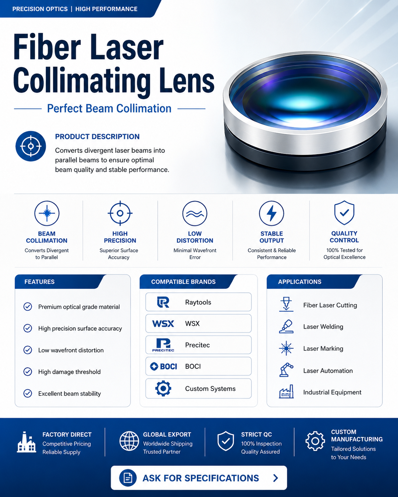

The Fiber Laser Collimating Lens converts divergent laser beams emitted from optical fibers into parallel beams, ensuring optimal beam quality before focusing.

The Fiber Laser Collimating Lens converts divergent laser beams emitted from optical fibers into parallel beams, ensuring optimal beam quality before focusing. It is designed for laser cutting heads, welding heads, and marking systems.
OEM and ODM projects welcomed. Contact us for customized specifications.
Send your brand, lens size, wavelength or drawing for a fast quotation.